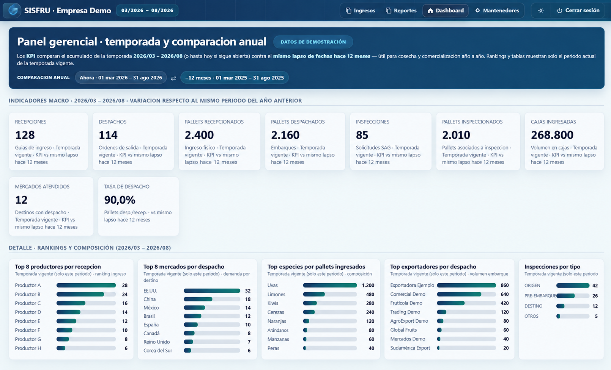
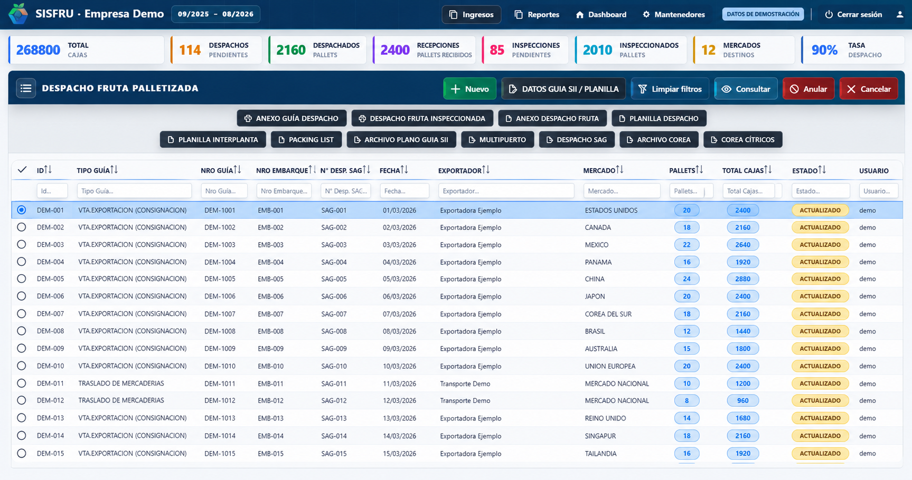
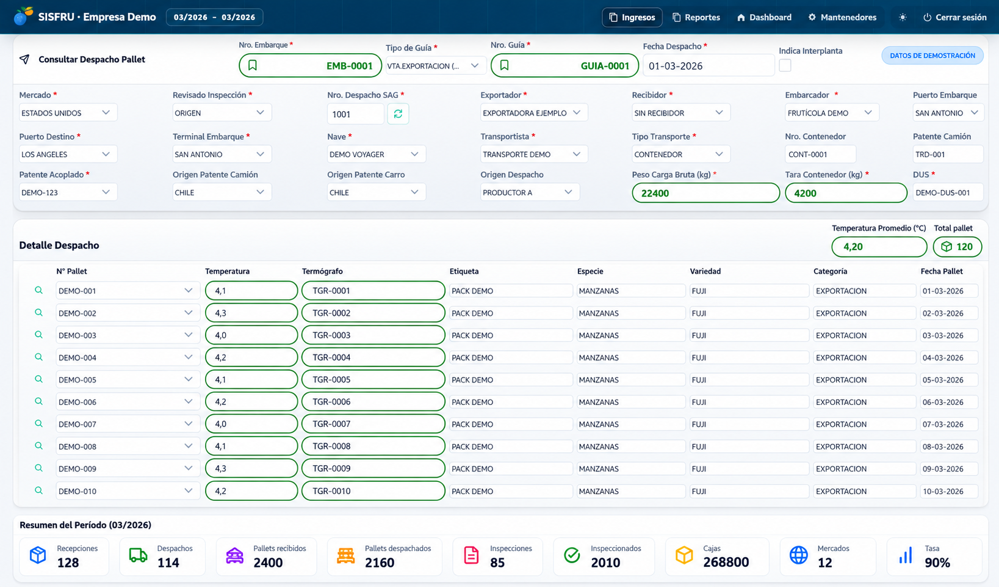

Conoce qué tienes.
Y dónde está.
Conecta existencias, movimientos y despachos para consultar la operación desde un mismo lugar.
- Inventario y ubicaciones
- Logística y trazabilidad
- Producción y control de etapas
Ingeniería potenciada por IA · Eficiencia para tu empresa
Incorporamos inteligencia artificial en cada etapa del desarrollo para reducir tiempos y costos. Tú recibes una solución hecha para tu operación y un activo que permanece en tu empresa.
Menos tiempo de desarrollo · Menor inversión · Sin licencias eternas

Dónde podemos ayudarte
Cuando los datos están repartidos entre planillas y sistemas, cada tarea exige más coordinación. Diseñamos una solución alrededor de ese proceso.
Conecta existencias, movimientos y despachos para consultar la operación desde un mismo lugar.
Ordena el flujo de información entre las personas y áreas que participan en cada proceso.
Evaluamos reglas, automatización e IA según el problema y la información disponible.
Conoce SISFRU
Un sistema para conectar recepción, inventario, pallets y exportación. Explora tres vistas de su operación con información de demostración.
Consulta recepciones, despachos, volúmenes y mercados para seguir la actividad y orientar tus decisiones.

Filtra guías, revisa estados y accede a los documentos del proceso desde el listado de despachos.

Reúne la información logística y los pallets asociados, con especie, variedad y antecedentes de la carga.
Vistas adaptadas de SISFRU. Empresas, identificadores y cifras ficticias para proteger la información de la operación.
La forma de trabajar de Tecnoges
Desarrollamos sistemas informáticos a medida para ordenar procesos y conectar información. SISFRU refleja ese enfoque en la gestión y trazabilidad agrícola.
Cada proyecto empieza por conocer cómo trabaja tu empresa: sus usuarios, sus datos y los puntos donde necesita más control.
Objetivos, etapas y entregables definidos en la propuesta del proyecto.
La solución se diseña alrededor del trabajo de tu empresa y de sus integraciones.
La puesta en marcha, los respaldos y la mantención forman parte de la conversación desde el inicio.
Del problema a la solución
Usamos IA para acelerar el análisis, la construcción, las pruebas y la documentación. Nuestro equipo dirige el proceso y convierte esa eficiencia en menor tiempo y costo para tu empresa.
Organizamos procesos, información y oportunidades con apoyo de IA, sin perder el contexto de tu negocio.
Transformamos la necesidad en un alcance claro, priorizado y preparado para avanzar sin desperdiciar recursos.
Aceleramos desarrollo, revisión y pruebas para entregar antes, manteniendo supervisión técnica especializada.
Preparamos documentación, puesta en marcha y continuidad para que tu equipo aproveche la solución desde el inicio.
La tecnología deja de ser un gasto permanente
En lugar de pagar indefinidamente por una solución ajena, inviertes en software construido para tu empresa. El ahorro en licencias, tareas manuales y tiempo operativo puede permitir recuperar la inversión aproximadamente en 12 meses.
Estimar el retorno de mi proyecto ↗01 Reduces pagos recurrentes
02 Ahorras tiempo operativo
03 Obtienes un activo propio
04 Conservas la eficiencia futura
Tu sistema. Tu empresa. Tu propiedad.
El desarrollo se cotiza según las necesidades de tu empresa. La eficiencia que obtenemos con IA se refleja en una propuesta más accesible y el sistema desarrollado queda en propiedad del cliente.
Separamos con claridad la inversión en desarrollo de los costos de infraestructura y continuidad, para que sepas qué compras, qué es tuyo y cuánto cuesta mantenerlo operativo.
Inversión optimizada con IA, definida según alcance e integraciones.
Hosting, base de datos, respaldos y mantención según la propuesta.
Valor del plan de continuidad anunciado. Sus límites y condiciones se detallan por proyecto.
El pago anual corresponde a infraestructura y servicios de continuidad; el desarrollo se cotiza por separado.
La propuesta debe detallar el software entregado, los accesos, la documentación y las condiciones aplicables al código y a componentes de terceros. Estos puntos se acuerdan antes de iniciar el desarrollo.
Las mejoras y nuevas integraciones se evalúan según su alcance. La propuesta distingue las tareas de continuidad incluidas de los desarrollos adicionales.
No. Primero revisamos el proceso. En algunos casos bastan reglas o integraciones; en otros, la IA puede apoyar la lectura, clasificación o consulta de información.
Una descripción del proceso que quieres mejorar, quiénes participan y qué herramientas utilizan hoy. Con eso podemos comenzar a evaluar la necesidad.
El próximo paso
Cuéntanos qué haces hoy y dónde necesitas más control. El primer paso es entender el desafío de tu empresa.
contacto@tecnoges.cl ↗Canal disponible próximamente
El formulario y WhatsApp se habilitarán próximamente. Por ahora puedes contactarnos por correo.